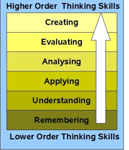

In the 1990's, a former student of Bloom, Lorin Anderson, revised and published a revision of the Taxonomy in 2001. A key change is the use of verbs rather than nouns for each of the categories and a rearrangement of the sequence within the taxonomy.
Bloom's Digital Taxonomy by Andrew Churches
This is an incredible wiki page in which the author shows how emerging technologies can be used at each stage of the taxonomy. He also provides pdf rubrics that can be used to assess the use of the tools.
All things to do with Bloom's revised taxonomy - posters, powerpoints and lessons.